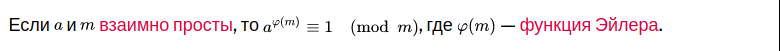
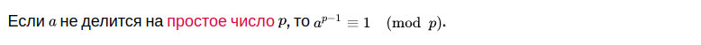
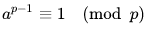

Откуда растёт RSA ?
Здравствуйте сегодня мы множечко погрузимся в мир RSA и «Малой теоремы Ферма».
Заходим на википедию https://ru.wikipedia.org/wiki/RSA и находим алгоритм:
Алгоритм создания открытого и секретного ключей RSA-ключи генерируются следующим образом:
1) выбираются два различных случайных простых числа p и q заданного размера (например, 1024 бита каждое);
2) вычисляется их произведение n=p * q, которое называется модулем; 3) вычисляется значение функции Эйлера от числа n:
φ(n)=(p-1) * (q-1) 4) выбирается целое число e (1<e< φ(n)), взаимно простое со значением функции φ(n); число e называется открытой экспонентой (англ. public exponent); обычно в качестве e берут простые числа, содержащие небольшое количество единичных бит в двоичной записи, например, простые из чисел Ферма: 17, 257 или 65537, так как в этом случае время, необходимое для шифрования с использованием быстрого возведения в степень, будет меньше; слишком малые значения e, например 3, потенциально могут ослабить безопасность схемы RSA.
5) вычисляется число d, мультипликативно обратное к числу e по модулю φ(n), то есть число, удовлетворяющее сравнению:
d * e ≡ (mod φ(n))
(число d называется секретной экспонентой; обычно оно вычисляется при помощи расширенного алгоритма Евклида);
6) пара (e,n) публикуется в качестве открытого ключа RSA (англ. RSA public key);
7) пара (d,n) играет роль закрытого ключа RSA (англ. RSA private key) и держится в секрете.Алгоритм шифрования:
Взять открытый ключ (e,n) Алисы Взять открытый текст m Зашифровать сообщение с использованием открытого ключа Алисы: c=E(m)=mᵉ mod n
Алгоритм расшифрования:
Принять зашифрованное сообщение c Взять свой закрытый ключ (d,n) Применить закрытый ключ для расшифрования сообщения: m=D(c)=cᵈ mod n
Но вы когда нибудь задавались вопросом как это работает ?
Почему (mᵉ mod n = с)ᵈ mod n = m упрощая mᵉᵈ mod n = m равны и что это за волшебная n?
Частичный ответ в теореме Эйлера.

Важным следствием теоремы Эйлера для случая простого модуля является малая теорема Ферма:

Тоесть, если «p» простое число и не имеет общих делителей с «a» а так как простые числа делятся только на единицу и на себя то «p» с «a» не будет их иметь. В таких условиях всегда будет работать уравнение  в данном случае φ(p) = p — 1.
Единица в любой стенпени k равна единицы тогда мы можем домножить степень на k и наше равенство не измениться.

Единица домноженная на число «m» (не в степени) будем равна числу «m».

Тогда если мы домнажаем слева то и справа тоже будет «m».

Тогда можно заменить «m*» на +1 в степени.

Теперь нужно привести к:

Тоесть равно:

Теперь d можно вычислить:

d и будет закрытым ключом.
Материалы статьи:
- https://www.youtube.com/watch?v=VUPoIyvJdGI
- http://www.michurin.net/computer-science/rsa.html
- https://ru.wikipedia.org/wiki/RSA